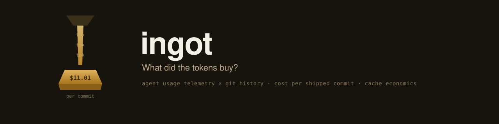

$561.28
spend across 3,790 API responses
What did the tokens buy?
Companies are spending heavily on AI coding agents. Dashboards show tokens per day and dollars per model, and nobody measures any of it against what actually shipped. Ingot builds the missing token:deliverable metric: it ingests agent-usage telemetry, reads your git history, joins the two by working directory and time window, and reports cost per commit, cache efficiency, and the spend that produced no commits at all.

this suite's own build, 2026-06-07 to 2026-07-07
A pipeline of four stages, from raw telemetry to a report you can put in front of whoever pays the bill:
Parse agent telemetry into normalized usage events: timestamp, model, token counts, session id, working directory. Two adapters ship today (Claude Code transcripts and Langfuse exports); an adapter is one module with a single scan() function.
Reads commit history via git log --numstat and classifies each commit: tests touched, docs touched, source touched, revert or not.
Attributes usage to repos by longest working-directory prefix match and buckets both sides into time windows, days or ISO weeks.
Prices tokens from a config-declared cost table and divides spend by what landed. Output as markdown, JSON, or a static HTML report. Scans are incremental and idempotent; prices apply at report time, so changing the cost table never requires a rescan.
Ingot is built to be pointed at real transcripts, so privacy is a hard guarantee, not a default: no conversation text is ever stored (adapters read from an explicit field allowlist and never touch message content), the directory allowlist is strict, and both guarantees are tested - fixture transcripts plant sentinel strings that the test suite asserts appear nowhere in the resulting database. 47 tests.
Ingot's worked example is the month that built the very suite these sites document. The scan allowlisted eleven Claude Code project directories of one inference-engineering workspace and joined them against five repos: four suite repos (anvil, sluice, assay, bellows) and the crucible eval harness.
spend $561.2785 across 3,790 api responses in 45 sessions
total tokens 1,083,985,397
fresh input 408,377
output 3,662,911
cache read 1,058,462,021
cache write 21,452,088
by model
claude-fable-5 $198.2326 110,967,533 tok 665 responses
claude-sonnet-4-6 $146.4594 367,017,236 tok 1,309 responses
claude-sonnet-5 $131.4129 514,877,893 tok 1,236 responses
claude-opus-4-8 $85.1737 91,122,735 tok 580 responses
cache efficiency
hit rate 98.0% of prompt tokens served from cache
saved by reads $3,224.4751 vs paying fresh-input price
net cache win $3,200.9242 after the $23.5510 write premium
deliverables
commits in period 51
cost per commit $11.0055 overall (all spend / all commits)
crucible $231.3977 attributed, 47 commits, $4.9234 per commit
(+24,097 / -1,274 lines, 18 test-touching commits at
$12.8554 per test-touching commit, 23 docs, 0 reverts)
unattributed spend
no repo match $304.2035
repo, no commits $32.5890
total $336.7925 (60.0% of spend)
zero-commit 36 of 45 sessions ($309.2405)Two things worth reading out of these numbers rather than past them. First, the cache is doing enormous work: 98% of prompt tokens were cache reads, and without caching this month would have cost roughly $3,200 more. Second, on the 60% unattributed spend: most sessions ran in the workspace root repo, deliberately not one of the five configured deliverable repos, and much of that spend was research, planning, and writing rather than commits (the four suite repos were days old at scan time). That is exactly the conversation this tool exists to make concrete.
A Python project run with uv. Three decisions live in the config: which telemetry sources to allowlist, which repos count as deliverables, and the per-model price table.
uv sync
cp ingot.example.yaml ingot.yaml # edit sources, repos, prices
uv run ingot scan # ingest into ingot.db
uv run ingot report # markdown to stdout
uv run ingot report --format json --out report.json
uv run ingot html --out report.html
ingot scan is incremental and idempotent: usage events are deduplicated by
message id, and re-running only adds what is new.